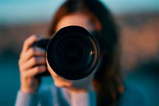

Mônica Van de Camp
Cada imagem carrega uma história. E é com imensa paixão que dedico meu olhar e minha técnica para contar a sua. Sou fotógrafa profissional há mais de 15 anos, e para mim, fotografar vai muito além de registrar um momento: é criar arte com luz, sombra e emoção. Cada clique é feito com maestria e, acima de tudo, com prazer — pois acredito que só quem ama o que faz consegue transformar uma simples foto em uma memória eterna. Ao longo dessa trajetória, investi em equipamentos e técnicas atualizadas, garantindo não apenas a melhor qualidade técnica, mas também a segurança e a fluidez de um trabalho que atenda suas expectativas, do início ao fim. Mas, o mais importante que câmeras e lentes é a conexão com você. Terei o maior prazer em recebê-lo(a), ouvir suas ideias e entender suas necessidades. Cada detalhe será pensado para que você se sinta confortável, seguro(a) e confiante diante das lentes. Conte comigo para criar a sua melhor imagem — aquela que vai emocionar, surpreender e perdurar. Vamos juntos transformar o seu olhar em arte?